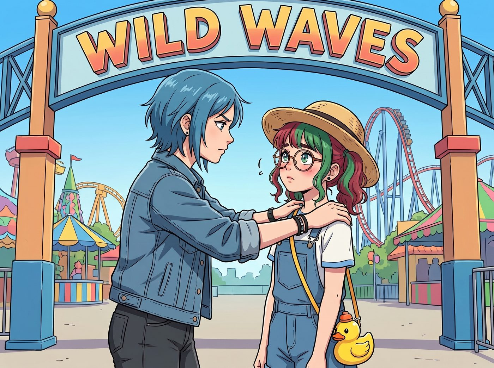
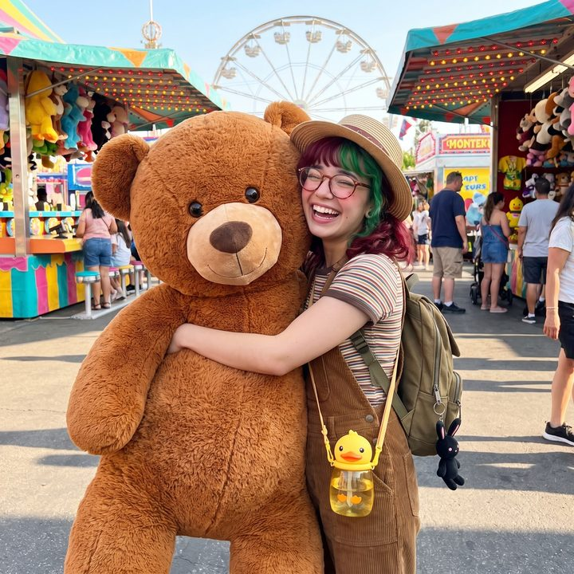

遊樂園的純真計畫


華盛頓州當然有主題公園。位於西雅圖南邊聯邦大道的 Wild Waves 主題水上樂園，是當地最著名的遊樂勝地，擁有木製過山車、跳樓機和各種充滿廉價歡樂氣息的嘉年華遊戲。
為了拯救實習生那被行政公文和法規徹底異化的十九歲青春，Max 和 Kate 發起了名為重返童真：實習生靈魂淨化之旅的特別行動。就連嫌棄主題公園充滿了平民汗水味與大腸桿菌的 Victoria，也為了讓 Lily 放下那本可怕的黑色筆記本，勉為其難地包下了五張最高級別的 VIP 快速通關票。
「聽著，小傢伙。」站在 Wild Waves 的大門口，Chloe 雙手按著 Lily 的肩膀，語氣嚴肅，「今天沒有 FOIA，沒有合規檢查，也沒有 IRS 舉報信。妳今天的唯一任務，就是吃著黏糊糊的棉花糖，在過山車上尖叫，然後像個正常的蠢丫頭一樣，為了一個廉價的毛絨玩具傾家蕩產。懂了嗎？」
「好的，Price 學姐。」Lily 穿著吊帶牛仔褲，戴著一頂可愛的草帽，背著一個小黃鴨水壺，看起來就像個來參加夏令營的純潔小天使。「我一定會努力體驗簡單純粹的快樂的。」
一開始，計畫似乎進行得很順利。
一、變味的過山車體驗
第一站是著名的木製過山車「Timberhawk」。
當過山車爬升到最高點，然後以七十公里的時速俯衝而下時，Chloe 興奮地大吼，Max 緊緊閉著眼睛，Victoria 尖叫著保護她的髮型，而 Kate 則在默默祈禱。
至於 Lily？
過山車衝到底部的時候，坐在 Max 旁邊的 Lily 確實張開了嘴巴，但她沒有尖叫。
在呼嘯的風聲中，Max 驚恐地聽到實習生正在以極快的語速喃喃自語：「……根據離心力公式，我們剛才承受了約 2.5G 的重力加速度。但這根支撐木樑發出的嘎吱聲頻率，顯示它的金屬疲勞度已經接近西雅圖特種設備安全條例的臨界值。Max 學姐，您知道這家樂園的公眾責任險上限是多少嗎？如果我們現在脫軌飛出去，我計算過，我們每個人大概能獲得 450 萬美金的賠償金，足夠 Victoria 學姐在曼哈頓買兩個新店面了……」
下了過山車後，Max 扶著欄杆乾嘔，不知道是因為暈車，還是因為被實習生的財富變現邏輯嚇到了。
二、嘉年華遊戲的降維打擊
真正讓純真計畫徹底破功的，是樂園裡的嘉年華遊戲區。
Chloe 為了在 Max 和 Kate 面前耍帥，看中了一個攤位上最大的、足足有一人高的粉色毛絨大熊。這是一個簡單的投籃遊戲，十塊美金投三次，投進一個就能把大熊帶走。
然而，Chloe 扔了整整一百塊美金，籃球不是砸在框上彈飛，就是莫名其妙地滑出來。
「這他媽絕對有鬼！」Chloe 氣急敗壞地捲起袖子，準備去後車廂拿管鉗，「老娘要砸了這個黑心攤子！」
「哎喲，小姑娘，自己技術不行別怪框啊。」攤主是個滿臂刺青、流裡流氣的中年男人，他得意洋洋地抽著煙，嘲笑著 Chloe，「願賭服輸，沒錢就讓開。」
就在 Chloe 準備發動物理攻擊，Victoria 準備掏出黑卡用錢砸死對方時，Lily 走了出來。
她依然是那副乖巧純潔的打扮，手裡甚至還拿著吃到一半的粉色棉花糖。她走到攤位前，推了推圓框眼鏡，對著攤主露出了一個天使般甜美的微笑。
「先生，您好。」Lily 的聲音軟糯極了，「Price 學姐確實技術不好，但您的籃框似乎也有一點點幾何學上的小幽默呢。」
攤主愣了一下：「什麼幽默？妳別亂講話啊！」
「我剛才目測了一下。」Lily 吃了一口棉花糖，語氣溫柔地開始了她的表演，「您的標準籃球直徑是 9.5 英寸。而您這個所謂的圓形籃框，橫向直徑是 10 英寸，但縱向直徑被外力擠壓成了 9.2 英寸。這意味著，這是一個在物理學上絕對不可能空心入網的橢圓形陷阱。」
攤主的臉色變了，他心虛地看了一眼周圍的人群：「妳……妳胡說八道！」
Lily 沒有生氣，她只是雙手交握，發動了最致命的行政黑魔法：「先生，根據華盛頓州博彩委員會關於遊樂園技能遊戲的第 230-13-050 號法規，所有聲稱為技能測試的遊戲，必須保證玩家在掌握技巧後有 100% 的獲勝可能。您這種物理上無法達成的設備，已經將其性質從技能遊戲轉變為非法賭博詐欺。」
Lily 從吊帶褲的小口袋裡掏出手機，螢幕上已經打開了華盛頓州消費者保護局的投訴頁面。
「我非常理解您經營小本生意的不易，」Lily 微微歪著頭，眼神中充滿了聖母般的悲憫，「所以我在想，如果我現在打電話給園區的管理處，並同時將這份設備幾何變形證據抄送給州度量衡管理局，您不僅會面臨五千美金的罰款，這家樂園還會因為連帶責任而直接吊銷您的攤位特許經營權。」
Lily 停頓了一下，用最甜美的聲音給出了最後的選擇：「您覺得，是您的攤位執照比較重要，還是說……Price 學姐剛才的最後一球，其實是一陣妖風把它吹出來的，她其實已經贏了呢？」
攤主看著眼前這個戴著草帽、吃著棉花糖的十九歲女孩，冷汗瞬間浸濕了後背。他這輩子見過耍賴的、見過掀桌子的，但從來沒見過能把博彩法規和幾何學結合起來合法勒索的！
「她贏了！！」攤主嚇得聲音都劈叉了，他連滾帶爬地衝到後面，一把將那個一人高的粉色大熊拽下來，恭恭敬敬、甚至帶著一絲恐懼地塞進了 Lily 的懷裡，「是妖風！絕對是妖風！這隻熊是妳們的了！祝妳們玩得開心！」
三、屬於她的簡單快樂
周圍看熱鬧的遊客爆發出一陣歡呼。
Lily 抱著那隻幾乎把她整個人都淹沒的粉色大熊，轉過身，看向已經徹底石化的二號車廂四人組。
這一次，Lily 臉上的笑容不再是那種為了威懾敵人而刻意偽裝的 Kate 式天使微笑。她的大眼睛裡閃爍著真正純粹的光芒，臉頰因為興奮而微微泛紅。
「Max 學姐！Kate 學姐！妳們看！」Lily 開心地抱著大熊原地轉了一圈，像個真正的十九歲女孩一樣發出清脆的笑聲，「我贏了！嘉年華遊戲真的太好玩了！規則的漏洞和人性的恐懼結合在一起，簡直是世界上最有趣的遊樂設施！」
Chloe 呆呆地看著那隻大熊，又看了看 Lily，嘴裡的棒棒糖掉在了地上：「……她剛才是不是說了規則的漏洞和人性的恐懼？」
Victoria 痛苦地揉著眉心：「是的。而且她看起來是發自內心地感到快樂。我們試圖讓她重返童真，結果我們只是給她提供了一個全新的底層邏輯打擊測試場。」
Max 默默地舉起相機，將 Lily 抱著大熊開心大笑的畫面定格下來。雖然過程無比扭曲、充滿了令人髮指的官僚黑魔法，但照片裡的這個女孩，確確實實找回了屬於她的簡單快樂。
因為對現在的 Lily 來說，單純的快樂早就不再是坐過山車了。她真正的快樂，是利用自己學到的知識，將這個世界上所有試圖欺負她、欺負她家人的惡意，用最合法、最禮貌的方式，碾壓成齏粉。
Kate 走上前，溫柔地幫 Lily 整理了一下草帽，笑著摸了摸她懷裡的大熊：「Lily 真的很棒呢，不僅保護了 Chloe 的錢包，還沒有對別人說髒話，非常有禮貌哦。」
「謝謝 Kate 學姐！」Lily 乖巧地蹭了蹭大熊，「那我們下一個去玩什麼？那邊的套圈圈遊戲，我剛才目測了一下他們塑膠圈的熱脹冷縮比例……」
「不！我們去吃熱狗！去買紀念品！今天禁止靠近任何帶有概率性質的設施！」Chloe 和 Max 異口同聲地發出了絕望的哀嚎，拖著這隻滿腦子都是消費者保護法的霸王龍，逃難似的離開了嘉年華區。